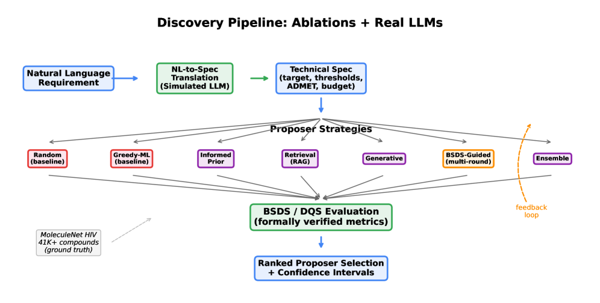
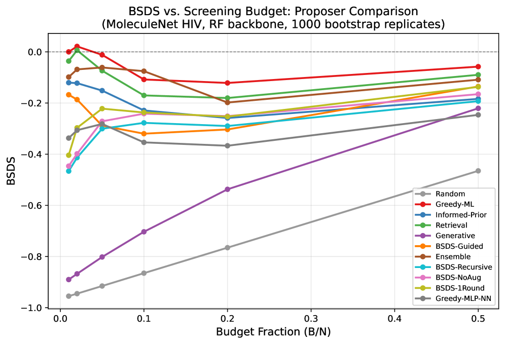

Defines the Budget-Sensitive Discovery Score with 20 theorems machine-checked in Lean 4.
Abstract
Scientific discovery increasingly relies on AI systems to select candidates for expensive experimental validation, yet no principled, budget-aware evaluation framework exists for comparing selection strategies -- a gap intensified by large language models (LLMs), which generate plausible scientific proposals without reliable downstream evaluation. We introduce the Budget-Sensitive Discovery Score (BSDS), a formally verified metric -- 20 theorems machine-checked by the Lean 4 proof assistant -- that jointly penalizes false discoveries (lambda-weighted FDR) and excessive abstention (gamma-weighted coverage gap) at each budget level. Its budget-averaged form, the Discovery Quality Score (DQS), provides a single summary statistic that no proposer can inflate by performing well at a cherry-picked budget. As a case study, we apply BSDS/DQS to: do LLMs add marginal value to an existing ML pipeline for drug discovery candidate selection? We evaluate 39 proposers -- 11 mechanistic variants, 14 zero-shot LLM configurations, and 14 few-shot LLM configurations -- using SMILES representations on MoleculeNet HIV (41,127 compounds, 3.5% active, 1,000 bootstrap replicates) under both random and scaffold splits. Three findings emerge. First, the simple RF-based Greedy-ML proposer achieves the best DQS (-0.046), outperforming all MLP variants and LLM configurations. Second, no LLM surpasses the Greedy-ML baseline under zero-shot or few-shot evaluation on HIV or Tox21, establishing that LLMs provide no marginal value over an existing trained classifier. Third, the proposer hierarchy generalizes across five MoleculeNet benchmarks spanning 0.18%-46.2% prevalence, a non-drug AV safety domain, and a 9x7 grid of penalty parameters (tau >= 0.636, mean tau = 0.863). The framework applies to any setting where candidates are selected under budget constraints and asymmetric error costs.
Problem
No principled, budget-aware evaluation framework exists for comparing AI-driven scientific candidate selection strategies. Standard classification metrics obscure performance at the specific budget where decisions are made, and no metric jointly models budget constraints, asymmetric error costs, and the option to abstain.
Approach
The Budget-Sensitive Discovery Score (BSDS) jointly penalizes false discoveries (lambda-weighted FDR) and excessive abstention (gamma-weighted coverage gap) at each budget level. Its budget-averaged form, DQS, provides a single summary statistic. 20 theorems are machine-checked in Lean 4. The framework is evaluated with 39 proposers (mechanistic variants, zero-shot and few-shot LLM configurations) on MoleculeNet HIV and other benchmarks.

Figure 1: Evaluation pipeline for 39 proposers across five categories: baselines (2), mechanistic ablations (5), direct optimization (BSDS-Recursive), ablation controls (3), and real LLMs (28). All proposers are evaluated by the formally verified \mathrm{BSDS} / \mathrm{DQS} metric with 1,000 bootstrap replicates. Multi-round proposers receive evaluation feedback (dashed arrow).
Results
The simple RF-based Greedy-ML proposer achieves the best DQS (-0.046), outperforming all MLP variants and LLM configurations. No LLM surpasses the Greedy-ML baseline under zero-shot or few-shot evaluation on HIV or Tox21. The proposer hierarchy generalizes across five MoleculeNet benchmarks (0.18%-46.2% prevalence) and a non-drug AV safety domain, with ranking stability tau >= 0.636 across a 9x7 grid of penalty parameters.

Figure 2: \mathrm{BSDS} as a function of budget fraction B/N for all 11 mechanistic proposers (2 baselines, 5 ablations, BSDS-Recursive, and 3 ablation controls), with 95% bootstrap confidence bands. Greedy-ML dominates all proposers across budget levels.